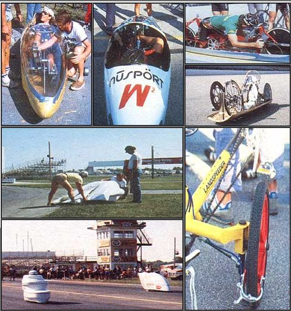
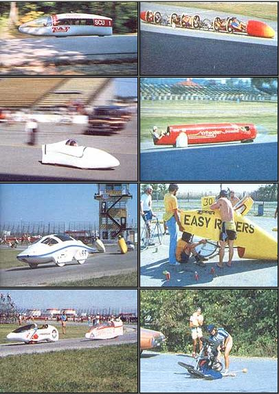

The bicycle stands as one of the best examples of appropriate technology around today. After al "A.T." (an applied science that incorporates social and cultural values) is characterized by simplicity, universality, affordability, and reliance upon renewable resources . . . all of which are undeniable attributes of that familiar and extraordinarily efficient two-wheeled machine.
Here at MOER, we've developed several pedal-power machines of our own that put leg (and arm) energy to practical use . . . including inexpensive recumbent tricycle that combines to good advantage a number of "trig" design features (see issue 81, page 162).
It should come as no surprise, then, that this magazine's staffers would be interested in what's going on at the front of bicycle technology . . . which is annual revealed at the International Human Powered Vehicle Association's Speed Championships. Recently, the Indiana IHPVA chapter s Bored the 1983 event at Indianapolis (appropriately enough) . . . and the racing capital's distinctive facilities, coupled with the enthusiasm of entrants and supporters alike, proved to make this ninth annual competition one of the most successful yet.
Traditionally, the championships have included several events in two categories: single- and multiple-rider vehicles. This year, though, that program was expanded to include 4000-meter velodrome pursuit races, an arm -powered-only class, and a practical-vehicle competition. The Indy 500 speedway was host to the unlimited and the 600-meter "flying start" speed trials-both clocked over a distance of 200 meters-while nearby Raceway Park was the site of the 1/4-mile sprints and the 12-1/4-and 21-mile road events. A local city park's hilly and winding 2-1/2-mile paved course provided an ideal setting for the final 5- and 20-mile Le Mans and paced-start road races.
The speeds achieved throughout the competition (about 55 MPH in the sprints and in the 30's over the road courses) were clearly impressive. Still, they tell only part of the story. The real import of the event lies in its influence on human-powered technology and that development's s effect on society. With the advent of strong, lightweight construction materials, the growing knowledge of low-speed aerodynamics, and continued advances in adapting mechanical techniques to the human body, it's becoming evident that human-powered vehicles need not be associated exclusively with athletic individuals, but may someday be regularly used for commuting aced recreation.
Of course, some of the "top of the line" vehicles you see here take advantage of state-of-the-art technology (often provided by supportive manufacturers) and represent considerable investments. On the other hand, a fair number of machines oft an intermediate approach and were designed by people leaning toward affordable, practical vehicles for the developing public market. There are also indications that next year's IHPVA event may include an "assisted" class, which will allow the use of stored energy sue as that from flywheels, accumulators, an even large rubber bands. We think any endeavors in the human-powered arena are efforts yell spent. And whether the end result is a personal get-around-town conveyance or a perm-powered compost shredder, it'll serve as a prime example of healthful, appropriate technology.
EDITOR'S NOTE: Members in the IHPVA-which includes a subscription to the association's newsletter, Human Power-is open to anyone interested. Annual dues a $15 in the U.S. ($l7 in Canada and Mexico) and should be directed to IHPVA, Dept. TMEN, P.O. Box 2068, Sea! Beach, California 90740.
|
 A good deal of last-minute preparation is essential. The drive mechanisms cover the spectrum front conventional chainwheels and derailleurs to those modified with outsized sprockets to linear-action de signs. Upsets-every at 30 or 40 MPH-present only a minor nuisance because of ' the vehicles' fight weight and tough Kevlar or composite fairings. The 1/4 dragstrip sprints acrd the nighttime velodrome pursuits offered a nice balance to the longer road events. Indianapolis' Eagle Creek Park presented contestants with challenging hills and curves in a beautiful setting. Two-, four-, and five-person vehicles all vied for victory in the multiple-rider class, which was dominated by university engineering students. The ` flying start"" speed trials at the site of the Indy 500 resulted in the highest velocities of the championships weekend: just at the legal speed limit! Road course entrants approached speeds of 40 MPH. Practicality as well as speed is important: The machines should be repairable and maneuverable. |
 Indianapolis' Eagle creek Park presented with challenging hills and curves in a beautiful setting. Two-, four and five-person vehicles all vied for victory in the multiple-rider class, which was dominated by university engineering students. The ""flying start "" speed trials highest velocities of the championships weekend: just at the legal speed limit! Road course entrants approached speeds of 40 MPH. Practically as well as speed is important: The machines should be repairable and maneuverable. |
|